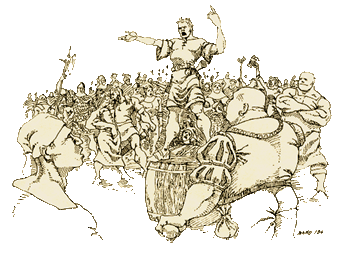

|
Az agitátor
Karrier leírás Warhammer Fantasy
Roleplay-hez.

| "Ennyi orkstobaságot életemben
nem hallottam" |
|
- Enyhén ideges törpe
véleménynyilvánítása
egy agitátor szónoklata közben.
|
Az agitátor talán a
legizgágább fajta az Óvilágon. Még jó, hogy
a törpék és a félszerzetek természetbeli hiányosságaik
miatt nem igazán alkalmasak e "munka"
ellátására, különben egy rakás pattogó,
szakállas vagy szõröslábú adrenalinbomba
rohangálna a Birodalom területén.
Bizonyára mindenki látott
már kalandozásai során tógába öltözött,
hordón álló, feltüzelten szónokló alakokat,
akik a jónépet hergelték. Nos, igen, eltaláltak
kedves olvasó - õk az agitátorok. Kevés kivétellel,
módfelett idegesítõ népség, így ahol
megjelennek, bizony könnyen keverednek összetûzésbe
egy-egy felidegesített hallgatójukkal.
Az igazi agitátort a vitában
való felülkerekedés és gyõzelem érzése élteti,
légyen az személyes vagy nyilvános probléma
feszegetése. Legalább ennyire lelkesedik a
szervezés, a szervezkedés iránt is.
A jó agitátor elkötelezi
magát egy bizonyos álláspont mellett és élete
végéig kitartóan küzd érte - hacsak meg nem
gyõzik annak hamisságáról (megjegyzem, ez utóbbi
nem fordul elõ túlságosan gyakran).
Óriási élvezetet nyújt
számára, ha látja, hogy szavait szivacsként szívja
magába a nép és hatásán felzúdulva, megpróbálja
rákényszeríteni akaratát az adott rendszerre.
Mindebbõl következõen, nem hátrányos, ha az
agitátor jól bánik a fegyverrel; a fent említett
problémák mellett a városokat összekötõ
utakon leselkedõ veszélyek sem lebecsülendõek.
|
"Az agitátor
szava a nép szava"
|
|
- Közkedvelt
agitátor mondás.
|
Minden idõk legsikeresebb
és legravaszabb szónoka az esthaliai Dana Nova,
a Moghorva.
Igazán impozáns kinézetû
fiatalember volt, bozontos szõke hajával,
fanatikus tûzben ízzó kék szemével, túljátszott
sántaságával. Ez utóbbi jellemzõjét egy
lovasbaleset során szerezte, mikor is hátulról
telibe trafálta egy csapat igen dühöz goblin,
akinek alig pár perccel korábban próbálta
bebizonyítani, hogy semmi keresnivalójuk sincs a
Nulnba tartó kereskedelmi útvonal közelében.
Dana ekkor még fiatal
volt, idealista és hitt a kimondott szó erejében.
Ifjú kora ellenére máris konok kitartás
jellemezte, így azután, sérüléseibõl felgyógyulva
visszatérést a goblinokhoz és pillanatok alatt
meggyõzte õket igazáról. Tanult azonban korábbi
kudarcából, így szavait oly súlyos érvekkel támogatta
meg, mint például harminc-negyven birodalmi
lovag és az az elhanyagolható létszámú falusi
csõcselék, mely mindenáron goblinfejre vágyott.
Számtalanszor bejárta az
Óvilágot keresztül-kasul, halálra idegesítve
egy rakás kalandozót, akiket a kétkezi munka
hasznosságáról, illetve a mértékletességrõl
próbált meggyõzni. Ezidõtájt szerezte elsõ
harci tapasztalatait is, mégpedig a vakmerõket kísérõ,
többnyire szintén van szerencse segítségével
úgy-ahogy ép bõrrel kerülvén ki belõlük.
Hosszú vándorlás után végül
Esthaliában találta meg a számára legmegfelelõbb
munkát - az uralkodócsalád szónoka, eszméinek
hirdetõje lett. Izzó beszédeivel, õsi rúnák
fordításából szerzett tudásával valósággal
fanatizálta a város lakóit, akik óriási
csoportokban gyûltek össze, valahányszor õ lépett
a szószékre.
A Moghorva nevet azután
kapta, hogy egy kemény politikai vitában az
egyik rivális agitátor fölékerekedett. Ezt követõen
egy évig nem volt hajlandó megszólalni a nyilvánosság
elõtt, s idejének nagy részét a sikeresen magára
uszított bérgyilkosok elõl való menekülés töltötte
ki.
Miután lenyugodtak a kedélyek
úgy döntött, hogy mivel a szó elszáll, az írás
megmarad, tehetségét inkább írott nyelven
kamatoztatja - újságot alapított, melyben
cseppet sem lanyhult intenzitással agitálta az
olvasni tudó lakosságot. Szónoki tehetségét
ezután csak és kizárólag lapja reklámozására
fordította.
Néhanapján kedvenc kocsmájában
üldögélve, áthatolhatatlan pipafüstbe burkolózva
elevenítette fel a régi szép emlékeket az érdeklõdõ
cimborák elõtt. Ezeket az estéket általában
egy asztal tetején állva fejezte be, a kocsma közönségének
legnagyobb sajnálatára. Hiába, az ember nem tud
kibújni a saját bõrébõl.
Warhammer Fantasy Roleplay
karakterjellemzõk és fejlõdési táblázat:
| |
M
|
Ws
|
Bs
|
S
|
T
|
W
|
I
|
A
|
Dex
|
Ld |
Int |
Cl |
Wp |
Fel |
| Agitátor |
|
+10 |
+10 |
|
|
+2 |
+10 |
|
|
+10 |
|
|
|
+10 |
Képzettségek / Skills: Szónoklás,
Írás/Olvasás
(Public speaking, Read/Write)
Felszerelés / Trappings: Kézifegyver,
Bõrmellény, 2D10 különbözõ témájú
röplap
(Hand Weapon, Leather Jack, 2D10
leaflets for various causes)
Karrier kijáratok / Career
exits: Sarlatán, Demagóg, Törvényen
kívüli
(Charlatan, Demagouge, Outlaw)
írta: Khitomer (Troll
melléklet, Rúna magazin 1. évf. 10. szám)
|